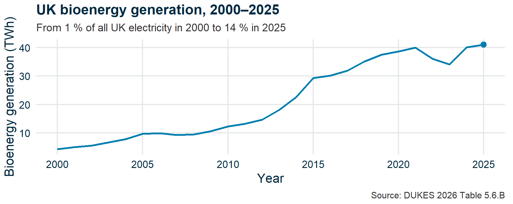
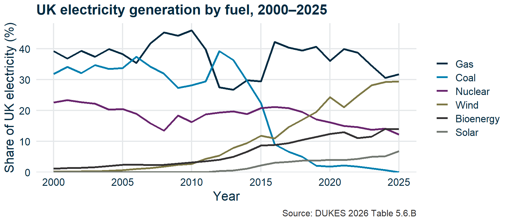

Bringing it together
Research Skills — Week 10
Recap
11:05
Recap
- Report structure
- Summary swap
- Figures
- Figure swap
- Framing
- Peer review briefing
- Wrap-up
Closing the loop
11:05
We’ve made it round the cycle!
Now: write it up so someone else can understand it and act on it.
Questions?
11:05

Submit questions:
PollEv.com/geol
text geol to 07480 781235
Report structure
11:10
- Recap
Report structure
🎓 Concept block 1
- Summary swap
- Figures
- Figure swap
- Framing
- Peer review briefing
- Wrap-up
The policy report
11:10
| Section | Length | Purpose |
|---|---|---|
| Summary | 200–300 words | The finding, the evidence, the recommendation |
| Introduction | 200–300 words | The question, why it matters |
| Methods | 250–400 words | Data, approach, why these tests |
| Results | 500–750 words | Figures, tests, plain-language interpretation |
| Discussion | ~500 words | What it means, caveats, recommendation |
Summary swap
11:25
- Recap
- Report structure
Summary swap
✏️💬 Exercise 1
- Figures
- Figure swap
- Framing
- Peer review briefing
- Wrap-up
Trade summaries
11:25
Swap your draft summary with someone working on a different topic.
As a reader, answer from the summary alone:
- What is the main finding?
- Do I trust it?
- What would I do with this information?
Then tell the author what you understood. If it isn’t what they meant, the summary needs work.
Figures
11:33
- Recap
- Report structure
- Summary swap
Figures
🎓 Concept block 2
- Figure swap
- Framing
- Peer review briefing
- Wrap-up
Key decisions
11:33
- What plot?
- Financial Times Visual Vocabulary: Every sort of chart for every possible purpose.
- How to tell the story
- Data journalism: The Economist
A figure that earns its place
11:40

Shows the data Explains the data Facilitates comparison
Every line equally loud
11:43

w10-annotation-before.R · idea after Heiss (2026)
Shows the data Explains the data Facilitates comparison
One story, labelled directly
11:47

w10-annotation-after.R · idea after Heiss (2026)
Shows the data Explains the data Facilitates comparison
Figure swap
11:50
- Recap
- Report structure
- Summary swap
- Figures
Figure swap
✏️💬 Exercise 2
- Framing
- Peer review briefing
- Wrap-up
Figure review
11:50
Show your main figure to someone working on a different topic.
As a reader, take one minute, then write:
- The figure’s headline, in one sentence
- The first thing your eye went to
As a plotter: Did your reader pick out your story?
If not: What needs labelling? What needs de-emphasizing?
Framing
12:05
- Recap
- Report structure
- Summary swap
- Figures
- Figure swap
Framing
🎓 Concept block 3
- Peer review briefing
- Wrap-up
Emotion shapes perception
12:05
People weigh a risk by how it feels, rather than its probability:
- Dreaded, unfamiliar, imposed risks loom large
- Familiar, chosen risks are overlooked
A690 crash, November 2026: Michelle Kearney / The Northern Echo
Counts are more relatable than percentages: “about 1 journey in 1000”, not “0.1 %” or “risk doubled” (compared to what?)
Framing shapes the message
12:10
“99 % of young Londoners do not commit serious youth violence”
Or in other words: 1 % of young Londoners do commit serious violence.
Or: Of London’s 1 million young people, 10 000 commit serious youth violence
That one didn’t make the poster.
What framings are available for the key numbers in your report? What is the emotional impact of each?
Peer review briefing
12:15
- Recap
- Report structure
- Summary swap
- Figures
- Figure swap
- Framing
Peer review briefing
📋 For the application session
- Wrap-up
The process
12:15
Before the application session:
- Commit and push a complete draft.
- Tag it
for-reviewand push the tag. That version is the one reviewed.
GitHub Desktop: History → right-click the commit → Create Tag…, then Push.
Until you’ve pushed, it’s not left your computer!
You will need to tag final to submit. Practise on for-review!
NB: a final tag can’t be undone.
During the application sesson: review a report on a different topic, then debrief and revise.
Wrap-up
12:27
- Recap
- Report structure
- Summary swap
- Figures
- Figure swap
- Framing
- Peer review briefing
Wrap-up
Any questions we missed?
12:27
Submit questions:
PollEv.com/geol
text geol to 07480 781235
Next time
12:52
Application session: “Review and revise”
Commit, push and tag a complete draft for-review before the session: that version gets reviewed.
Suggested reading
12:52
- Sutherland, Spiegelhalter & Burgman, “Twenty tips for interpreting scientific claims”, Nature. A terse summary of the term’s themes. Reading list
- Wilke, “Telling a story and making a point”, in Fundamentals of Data Visualization (free online). Reading list
- Krzywinski & Cairo, “Storytelling”, Nature Methods (2013). Reading list
Attendance
12:52
New login? Drag Attendance QR to the favourites bar.